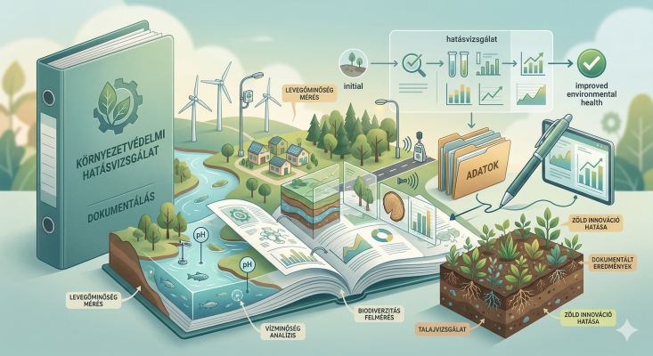

Környezetvédelem & hatásvizsgálatok
Elemzések és dokumentációk a megalapozott döntésekhez, kockázatok és intézkedések rendszerezése.
- Környezeti kockázatok feltárása, kezelési javaslatok
- Megfelelési és ellenőrizhetőségi szempontok
- Hatósági és partneri egyeztetések támogatása


Élővíz program szervezés
A környezetvédelmi élővíz program szervezése olyan komplex szakmai feladat, amely az élővizek ökológiai állapotának javítását, megőrzését és társadalmi tudatosítását egyaránt szolgálja. A program célja, hogy összehangolja a vízminőség-védelmi, élőhely-rehabilitációs és szemléletformáló tevékenységeket, miközben figyelembe veszi a vízgyűjtő-gazdálkodási szempontokat és a fenntartható vízhasználat követelményeit.
A szervezés során kiemelt szerepet kap a szakmai tervezés, az érintett hatóságokkal és partnerekkel való együttműködés, a jogszabályi megfelelés, valamint a lakosság és az intézmények bevonása. Egy jól felépített élővíz program nem csupán környezetvédelmi akció, hanem hosszú távú, rendszerszintű beavatkozás az ökológiai egyensúly és a társadalmi felelősség erősítése érdekében.
Székhely: Pécs • Működési terület: Dél-Dunántúl (Baranya, Somogy, Tolna)